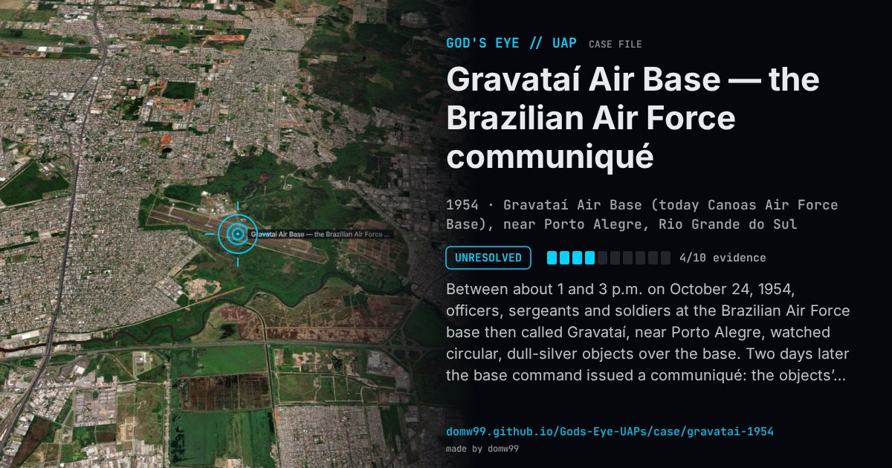

Gravataí Air Base — the Brazilian Air Force communiqué

Between about 1 and 3 p.m. on October 24, 1954, officers, sergeants and soldiers at the Brazilian Air Force base then called Gravataí, near Porto Alegre, watched circular, dull-silver objects over the base. Two days later the base command issued a communiqué: the objects’ speed and height could not be measured but were far beyond those of anything known, their course was erratic and they returned to earlier positions, they could not be confused with known celestial bodies, and no weather balloons were in the area. The base reported to the Air Force general command, asked for an investigation and invited civilians to send in their own reports, while its commander forbade staff to talk to the press until experts had studied the evidence. On November 16, 1954, Brigadier Gervásio Duncan released summaries of five of sixteen reports selected by the Air Force, two of them about Gravataí, and declined to speculate on what the objects were beyond saying that the observers were well qualified. No explanation was published; the communiqué survives through contemporary press reports collected by the Brazilian researcher Olavo Fontes.
What was seen
Shape: Circular objects of a dull silvery colour, moving erratically
Witnesses: Air Force officers, sergeants and soldiers at the base, and civilians
Duration: About two hours
Sources
- Olavo Fontes in Flying Saucer Review, May 1956 — the Gravataí communiqué (Project 1947 transcription)
- Canoas Air Force Base (formerly Gravataí Air Base) — Wikipedia
Browse
- Brazil
- 1950s
- Unresolved
- Military encounters
- Official government documents
- Many independent witnesses
- Military witnesses
- Spheres and orbs